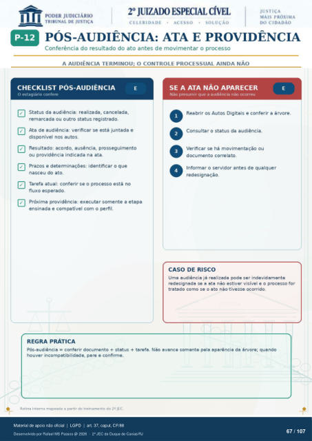

Transcrição automática em português, ainda não revisada. Confira grafia, prazos e termos jurídicos na imagem e no PDF antes de utilizar.
PÓS-AUDIÊNCIA: ATA E PROVIDÊNCIA
Conferência do resultado do ato antes de movimentar o processo
A AUDIÊNCIA TERMINOU; O CONTROLE PROCESSUAL AINDA NÃO
CHECKLIST PÓS-AUDIÊNCIA
O estagiário confere Status da audiência: realizada, cancelada,
remarcada ou outro status registrado. Ata de audiência: verificar se está juntada e
disponível nos autos. Resultado: acordo, ausência, prosseguimento
ou providência indicada na ata. Prazos e determinações: identificar o que
nasceu do ato. Tarefa atual: conferir se o processo está no
fluxo esperado. Próxima providência: executar somente a etapa
ensinada e compatível com o perfil.
REGRA PRÁTICA
SE A ATA NÃO APARECER
Não presumir que a audiência não ocorreu Reabrir os Autos Digitais e conferir a árvore.
Consultar o status da audiência. Verificar se há movimentação ou
documento correlato. Informar o servidor antes de qualquer
redesignaçâo.
CASO DE RISCO
Uma audiência já realizada pode ser indevidamente redesignada se a ata nao estiver visível e o processo for
tratado como se o ato nao tivesse cxorrido. Pós-audiência = conferir documento + status + tarefa. Náo avance somente pela aparência da árvore; quando
houver incompatibilidade, pare e confirme. Rotina interna mapeada a partir do treinamento do 29 JEC.
Ver também o infográfico original (página 67)
